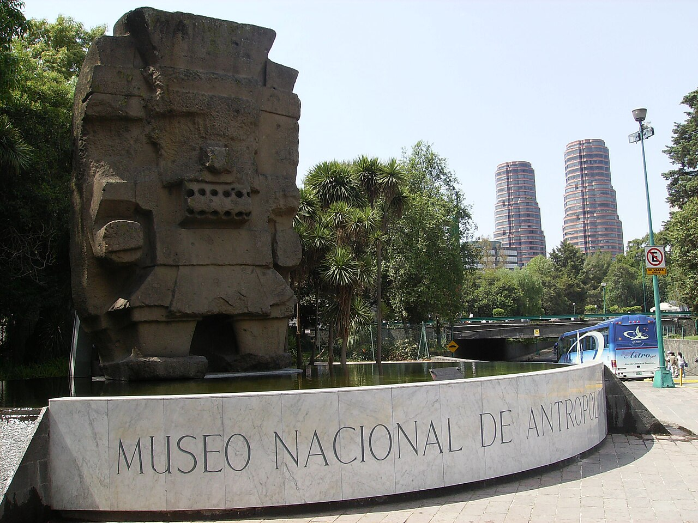

Day of the Dead in Mexico City: The Real Experience, Not the Tourist Version
When I moved to Mexico from Colombia, Día de Muertos was the first thing that made me understand this country at a soul level. It's not Halloween. It's not sad. It's the most beautiful celebration of love I've ever experienced. In Colombia we mourn our dead. In Mexico, they invite them back to the table, pour them a drink, and play their favorite music. The first time I saw an ofrenda — really saw one, in a family home, not a museum — I cried. Not because it was sad, but because it was so full of love that it overwhelmed me.
If you're planning to be in Mexico City for Día de Muertos, this guide is my attempt to help you experience it the way it deserves to be experienced — not as a photo opportunity, but as something that might genuinely move you.
What Day of the Dead Actually Is
Día de Muertos is not Mexico's version of Halloween. I need to say that clearly because it's the most common misunderstanding visitors bring. There are no haunted houses. Nobody is trying to scare you. This is a celebration rooted in pre-Hispanic indigenous traditions blended with Catholic influences over centuries — a time when families believe the spirits of their loved ones return to the world of the living for a brief visit.
The centerpiece of the tradition is the ofrenda — an altar built in homes, public spaces, and cemeteries to welcome the dead back. Ofrendas are covered with marigolds (cempásuchil), whose scent is believed to guide the spirits home. You'll see photos of the deceased, their favorite foods, candles, incense (copal), sugar skulls, and pan de muerto — a sweet bread made only during this season, dusted with sugar and shaped with small bone-like decorations on top.
It is tender, beautiful, and deeply personal. When you see an ofrenda, you are looking at someone's love for a person who is gone. Approach it with that understanding and you'll receive it the way it's meant to be received.
The Dates
Día de Muertos is not a single day. The tradition spans several days, each with its own meaning:
- October 31: The spirits of children (angelitos) begin to return. Many families light candles and set out toys and sweets on their ofrendas.
- November 1 (Día de Todos los Santos): The adult spirits arrive. Ofrendas are complete with food, drinks, and personal items. Cemeteries come alive with families cleaning and decorating graves.
- November 2 (Día de los Muertos): The main day. Families gather at cemeteries, share meals with the dead, play music, and spend the night in vigil. Public celebrations peak.
In practice, the entire last week of October builds toward these days. Events, parades, and ofrenda installations begin appearing throughout the city from around October 25th onward. If you're coming specifically for Día de Muertos, I'd recommend arriving by October 29th to see the city transform day by day.
Where to Experience It in Mexico City
The Mega Desfile on Reforma
The grand parade along Paseo de la Reforma has become one of the most spectacular events in Mexico City's calendar. Thousands of performers in elaborate skull makeup and traditional costumes, massive floats covered in marigolds, giant alebrijes (fantastical creatures), and music that makes your chest vibrate. It's a relatively new tradition — it started after the James Bond film Spectre featured a fictional version in 2015, and Mexico City decided to make it real. The parade walks along Reforma from Chapultepec toward the Zócalo. From Anzures, you can walk to a viewing spot on Reforma in about 8 minutes. This is one of the best advantages of our location — no taxi, no Metro, just a short walk and you're standing along the parade route.
Ofrendas at the Zócalo
Mexico City's main square hosts a massive, free ofrenda installation every year. It's different each year — sometimes with dozens of individual altars from different states of Mexico, sometimes a single monumental installation. It's crowded, yes, but it's worth the crowd. Go early in the morning or late at night when the candles make everything glow.
Mixquic Cemetery
If you want the most traditional, least commercialized Día de Muertos experience, go to Mixquic. It's a small town about an hour south of the city where families have maintained cemetery vigils for generations. On the night of November 1st, the cemetery is lit by thousands of candles, families sit beside their loved ones' graves sharing food and stories, and the air smells of marigolds and copal. It's not a performance — it's real. Be respectful, don't use flash photography, and let yourself absorb the atmosphere. It will stay with you.
Coyoacán
The neighborhood where Frida Kahlo lived and died is one of the most beautiful places to experience Día de Muertos. The streets around the central plaza fill with altars, face painters, and vendors selling pan de muerto and sugar skulls. The Frida Kahlo Museum (Casa Azul) typically has a special ofrenda dedicated to Frida and Diego Rivera. It's about 40 minutes from Anzures by car or Metro.
University City (UNAM)
The students at UNAM — Mexico's national university — build some of the most creative and politically charged ofrendas in the city. They're often massive, sometimes controversial, always thought-provoking. The campus itself is a UNESCO World Heritage Site with murals by Diego Rivera and David Alfaro Siqueiros. Combine a visit to the ofrendas with a walk around the campus.

Exploring CDMX culture extends beyond Day of the Dead
Why Anzures During Day of the Dead
The Reforma parade is 8 minutes walking from our door. That alone is reason enough. But there's more to it than convenience.
After the parades and the crowds and the noise — and Día de Muertos in CDMX can be overwhelming in the best way — you need a quiet place to return to. Condesa and Roma are beautiful, but during Día de Muertos they're packed with tourists and the streets are loud until late. Anzures is residential. Our street is calm. You come home, sit on your terrace, and process what you've just experienced.
There's something else, too. Walk around Anzures in late October and you'll see small ofrendas in people's homes — visible through windows and doorways. These aren't for tourists. They're for grandmothers, fathers, children. They're intimate and real, and seeing them as you walk to the corner store for coffee reminds you that this tradition isn't a festival — it's a way of living with loss and love at the same time.
One more thing: in 2026, F1 and Día de Muertos overlap. The Grand Prix is typically held in late October, which means the last week of October combines Formula 1 energy with Day of the Dead beauty. It's an extraordinary week to be in Mexico City, and a double reason to book early.
Mariana's Personal Traditions
Every year, I build an ofrenda at Casa Caravana. It's for the grandmothers — Cecilia, María Elvira, Isabel, and Silvia — the women our residences are named after. I never met them, but through the family who owns this building, I've heard their stories. Cecilia who loved gardening, which is why her residence has three terraces full of plants. Isabel who was quiet and elegant, like her studio. Silvia who collected art. María Elvira who cooked for everyone.
I set out their photos, marigolds from Mercado Jamaica (the massive flower market where I buy cempásuchil by the armful every October), pan de muerto from the bakery around the corner — the one where they know my order before I say it — and small offerings that connect to each grandmother's story. A gardening tool for Cecilia. A piece of chocolate for Silvia. It's become my favorite tradition in a country that has given me so many.

Fuel up at Taquería Selene before the Reforma parade
Practical Tips
- Book early. Accommodation prices surge 50% or more during the last week of October. Hotels in the center double their rates. Booking a residence like ours two to three months in advance is the smartest financial move — and you'll actually have a kitchen to make coffee before heading into the crowds.
- Bring warm layers. Late October evenings in Mexico City are cool — temperatures drop to 10-12°C (50-54°F) after sunset. The cemetery vigils happen at night. A good jacket is essential.
- Face paint is welcome, if done respectfully. Many visitors ask whether it's appropriate for foreigners to wear calavera (skull) face paint. The short answer: yes, as long as it's done with respect and quality. There are face painters throughout the city — especially near Reforma and the Zócalo — who do beautiful work for around $5-15 USD. Avoid cheap costume-store versions. If you're going to do it, do it well.
- Try the pan de muerto. This sweet bread is available everywhere in October, but the best comes from traditional bakeries, not Starbucks. The bakery near Casa Caravana makes an exceptional one — slightly orange-scented, soft, with just the right amount of sugar on top. I'll point you there when you arrive.
- Be present. This is my most important tip. Put your phone away for at least part of the experience. An ofrenda seen through a screen is not the same as an ofrenda seen with your own eyes, in the candlelight, with the smell of marigolds around you. Let yourself feel it.
"We came for the parade and left understanding something about Mexico we never could have learned from a book. Mariana's ofrenda at the house made us cry — in the best possible way."
Día de Muertos changed the way I think about loss. Before I came to Mexico, death was something to avoid talking about. Here, it's something to sit with, to honor, to celebrate with flowers and bread and music. If you give this tradition your full attention, it will give you something back that you didn't know you needed.

Experience Día de Muertos from the heart of the city
Casa Caravana is 8 minutes walking from the Reforma parade route. Four boutique residences in Anzures, each named after a grandmother we honor every November.
Explore Our Residences